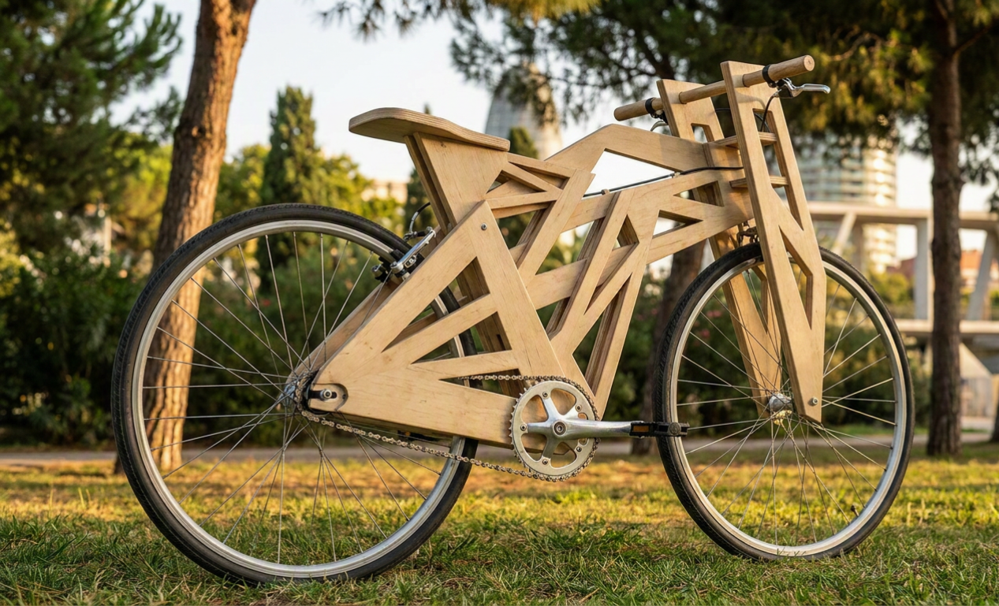
Dédalos
Build Your Own
Mobility
Project Overview
Dédalos: Build Your Own Mobility investigates how modular and decentralized design systems can transform the relationship between people, mobility, and production. Inspired by informal engineering practices, repair culture, and open-source infrastructures, it proposes a modular bicycle construction system that allows users to build, adapt, and maintain their own bicycles using CNC-fabricated frame components and accessible standardized parts.
The project includes a detailed catalogue of bicycle components, analyzing their cost, accessibility, manufacturability, and compatibility across different mobility scenarios such as urban commuting, road cycling, or off-road use. Based on this system, multiple bicycle configurations are developed according to different budgets and functional needs.
Rather than designing a fixed product, the project creates an open mobility framework that encourages participation, technical literacy, repairability, and emotional attachment to objects. The final outcome consists of a working prototype and a digital platform supporting the user experience, assembly process, and customization of the bicycles.
Project Planning & Research
The first step of the project was to establish its objectives, identify the key areas of research, and define the expected outcomes. This initial phase helped create a clear framework for the development of the project and ensured that both the design process and the final deliverables remained aligned with the core vision.
The intended outcomes included a comprehensive catalogue of bicycle components, a modular system capable of supporting three different bicycle typologies with interchangeable parts, a functional prototype demonstrating the feasibility of the system, and the development of a coherent narrative and product identity capable of communicating the project's social, technical, and cultural ambitions.

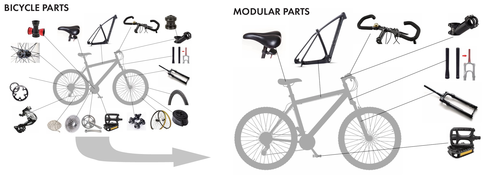
Component Analysis & Material Sourcing
Once the project objectives were defined, a detailed analysis of bicycle components was conducted to understand the requirements involved in building a complete bicycle system. Each component was identified and categorized according to several criteria: whether it could be manufactured locally or required an external supplier, whether it was necessary for a single-speed or multi-speed configuration, and whether it could be sourced second-hand or needed to be purchased new.
After classifying all components, a comprehensive bill of materials was developed, including estimated prices based on suppliers and second-hand markets in and around Barcelona. Notes were also collected regarding recommended retailers and workshops, informed by reviews, availability, and product quality.
A similar process was carried out for the structural materials used in the project. Different timber suppliers and bicycle component distributors across Barcelona were researched and compared. The findings were then organized into two resource maps, identifying key locations for sourcing materials, components, tools, and fabrication services.
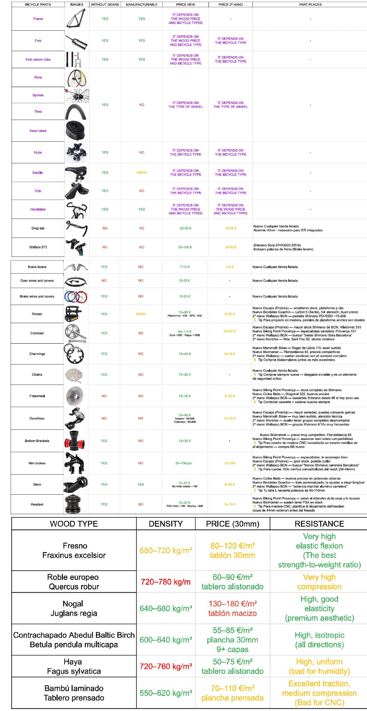
Design Development & Frame Architecture
For the design phase, three bicycle categories were selected: urban, road, and off-road. This decision was made to maximize the versatility of the system and demonstrate the modular potential of the project across different mobility scenarios and user needs.
To establish the foundations of each bicycle typology, a comparative analysis of their geometries and dimensions was conducted. Key parameters such as wheelbase, axle spacing, bottom bracket height, saddle position, handlebar height, and rider posture were studied and translated into a dimensional grid system. These reference geometries served as the basis for the development of the frame designs.
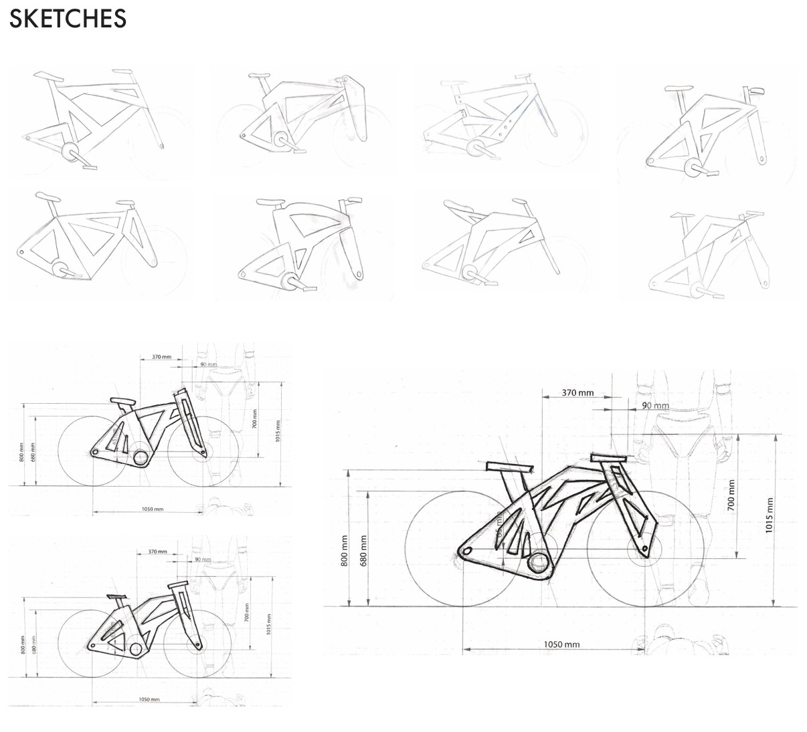
Given the project's commitment to accessible fabrication methods, the frame was conceived as a CNC-manufactured wooden structure assembled through a layered construction process. This approach allows the frame to be produced using standard plywood sheets while maintaining structural integrity and facilitating local manufacturing.
The design process involved mapping the position of all mechanical components, identifying critical load paths, and analyzing the main stress concentrations within the frame. Based on this assessment, a five-layer construction strategy was developed. The bottom bracket area and the lower frame section were identified as the zones subjected to the highest mechanical loads and torsional stresses.
As a result, these areas incorporate additional material thickness, increasing structural resistance while simultaneously lowering the center of gravity of the bicycle and improving overall stability.
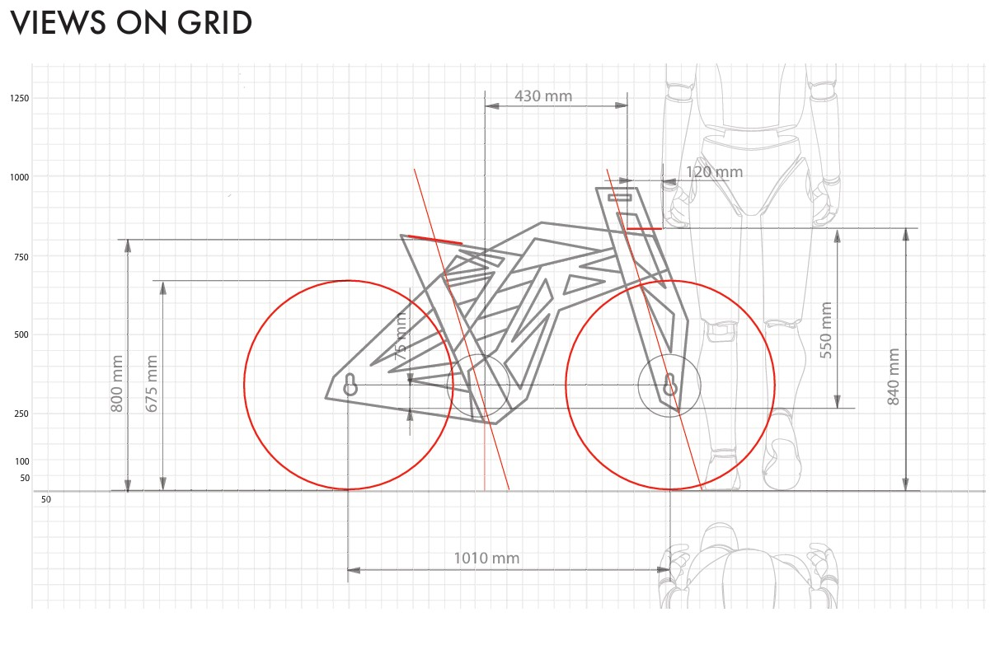
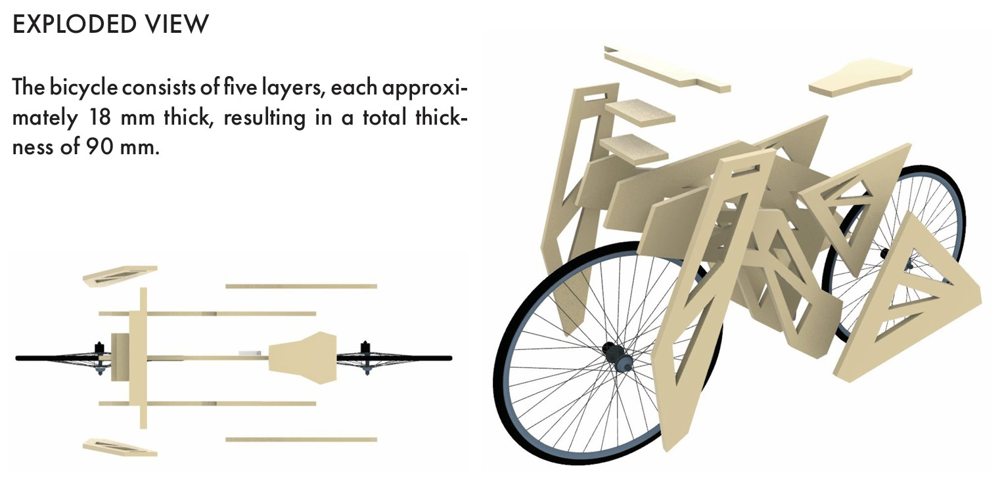
Bicycle Typologies
Urban
Designed for city commuting with an upright riding position, comfortable geometry, and practical accessories. Optimized for short to medium distances on paved surfaces.
Key features: Relaxed geometry, fender mounts, integrated lighting options, sturdy frame design.
Road
Lightweight and aerodynamic, designed for speed and long-distance rides. Features a more aggressive riding position and optimized geometry for efficiency.
Key features: Sporty geometry, lightweight construction, drop bars, high-performance components.
Off‑Road / MTB
Built for rugged terrain with a durable frame, wide tires, and stable geometry. Designed to handle gravel, dirt, and challenging off-road conditions.
Key features: Reinforced frame, wider tire clearance, flat handlebars, robust drivetrain.
Creating the Prototype
After completing the design phase, the urban concept was selected for prototyping. Rhino files were developed to cut the different frame components, which were later assembled and fitted with the necessary hardware.
A single-speed drivetrain was implemented, using a fixed sprocket and no gear shifting system. This decision simplified the overall mechanical complexity, eliminated the need for shift cables and derailleurs, and reduced costs by minimizing the number of components.
All drivetrain parts were sourced from local bicycle shops such as Monbike. The plywood sheets required for the frame were ordered and prepared for CNC cutting using ELISAVA's machinery. Once cut, each piece was individually sanded to improve surface finish and assembly precision, and then joined together using screws at key structural points.
Each plywood layer had a thickness of 18 mm, resulting in a total frame width of 90 mm.

Brand Identity — Dédalos
Next, a corporate identity was developed under the name Dédalos: Build your own mobility. The name is inspired by Daedalus, the engineer and inventor from Greek mythology who created wooden wings for his son Icarus. This reference establishes an analogy between the myth and the project: both highlight creativity, craftsmanship, and a do-it-yourself (DIY) approach.
At the same time, it reinforces the project's narrative of freedom, autonomy, and decentralized manufacturing, positioning mobility as something that can be self-built and reimagined by the user.
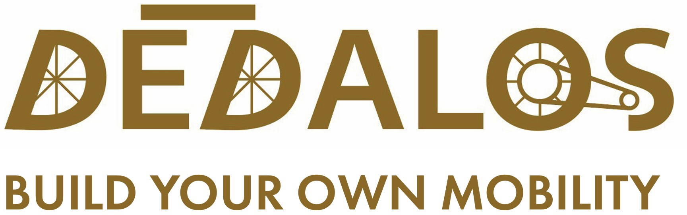
Final Reflections
This project has been an opportunity to explore the relationship between mobility, design, autonomy, and participation. Throughout the process, I have gained a deeper understanding of bicycle systems, manufacturing methods, material selection, and modular design principles, while also reflecting on broader questions related to ownership, repair culture, and decentralized production.
One of the most valuable lessons has been realizing that design is not only about creating objects, but also about creating systems that enable people to participate in their own material reality. By researching bicycle components, fabrication processes, sourcing networks, and user needs, I became increasingly interested in how design can empower individuals rather than simply provide finished products.
Although the project achieved its main objectives, I would have liked to have more time to enter a more detailed development phase. In particular, I would have liked to manufacture and assemble a complete prototype using the final frame design and all mechanical components. This would have allowed me to test the system under real conditions, evaluate its structural performance, analyze potential weaknesses, and better understand issues related to weight, material density, durability, and load distribution.
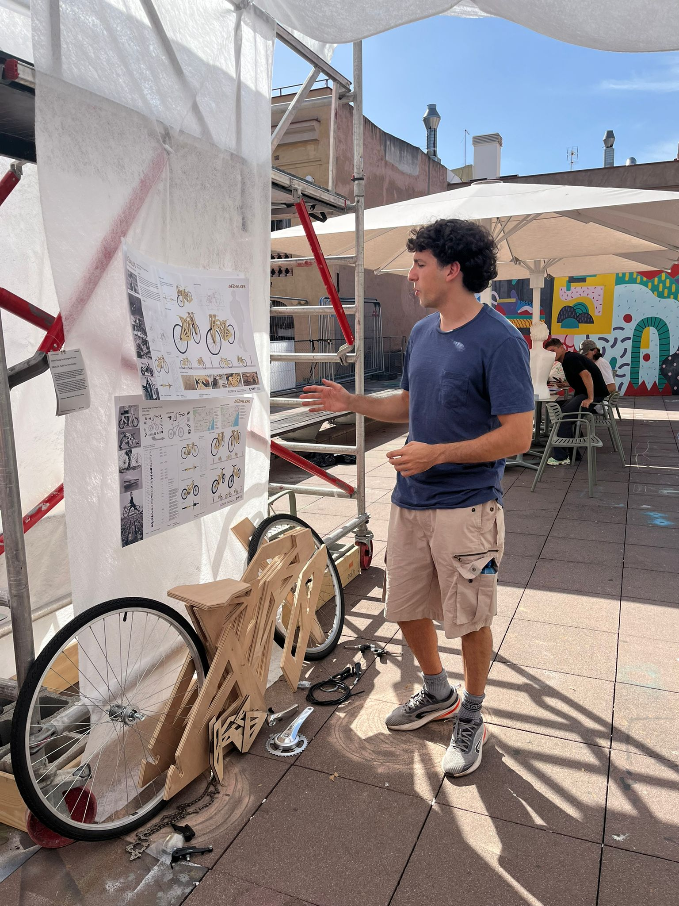
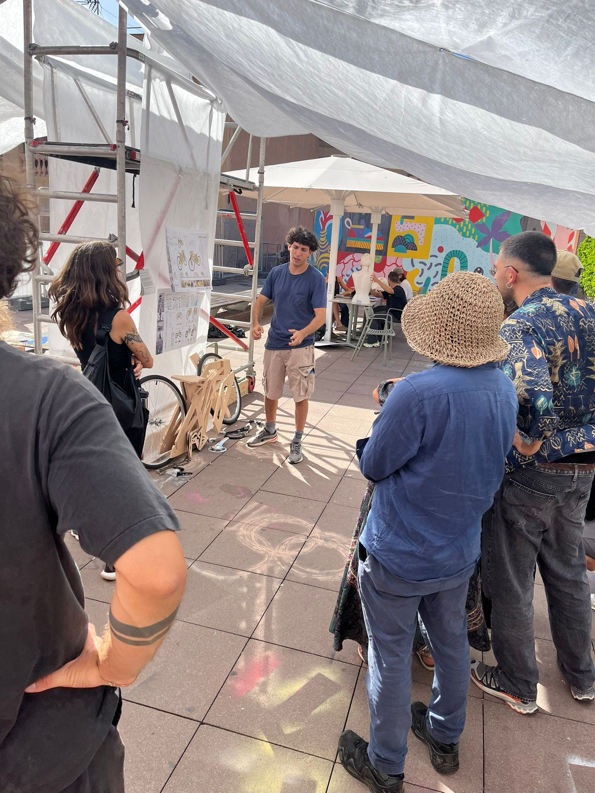
Next Steps — Open-Source Platform
The project should therefore be understood as the foundation of a larger and ongoing investigation rather than a finished solution. Future work will focus on refining the frame architecture, improving structural efficiency, and expanding the range of possible bicycle configurations within the modular system.
Looking ahead, one of my main goals is to develop an open-source digital platform where all project documentation, fabrication files, assembly guides, and technical specifications will be freely available. Through this website, users will be able to access the CNC files, learn how to source components, and follow step-by-step instructions to build their own bicycle according to their needs and budget.
Ultimately, Dédalos aims to become more than a bicycle project. It seeks to contribute to a culture of making, repairing, and understanding the objects that shape our everyday lives. By sharing knowledge openly and enabling people to build their own means of transportation, the project aspires to promote greater autonomy, technical literacy, and more meaningful relationships between people, objects, and mobility infrastructures.
Final panels
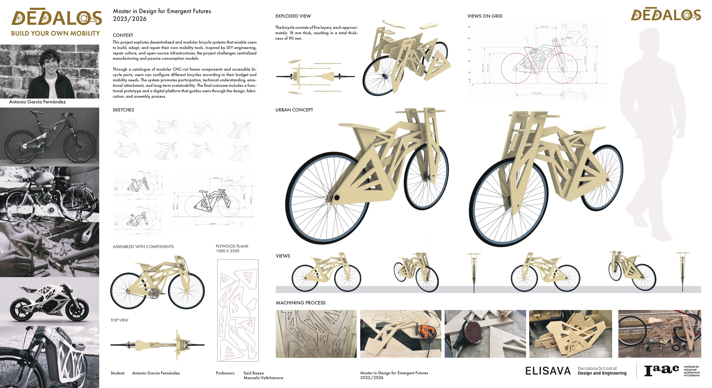
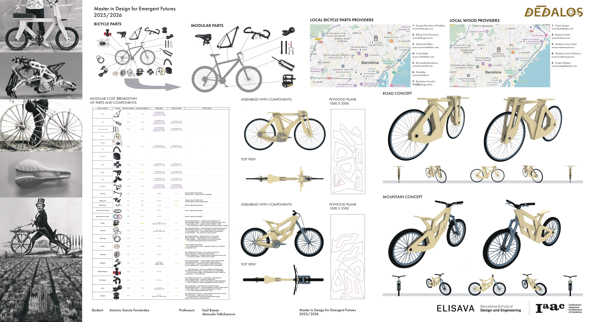